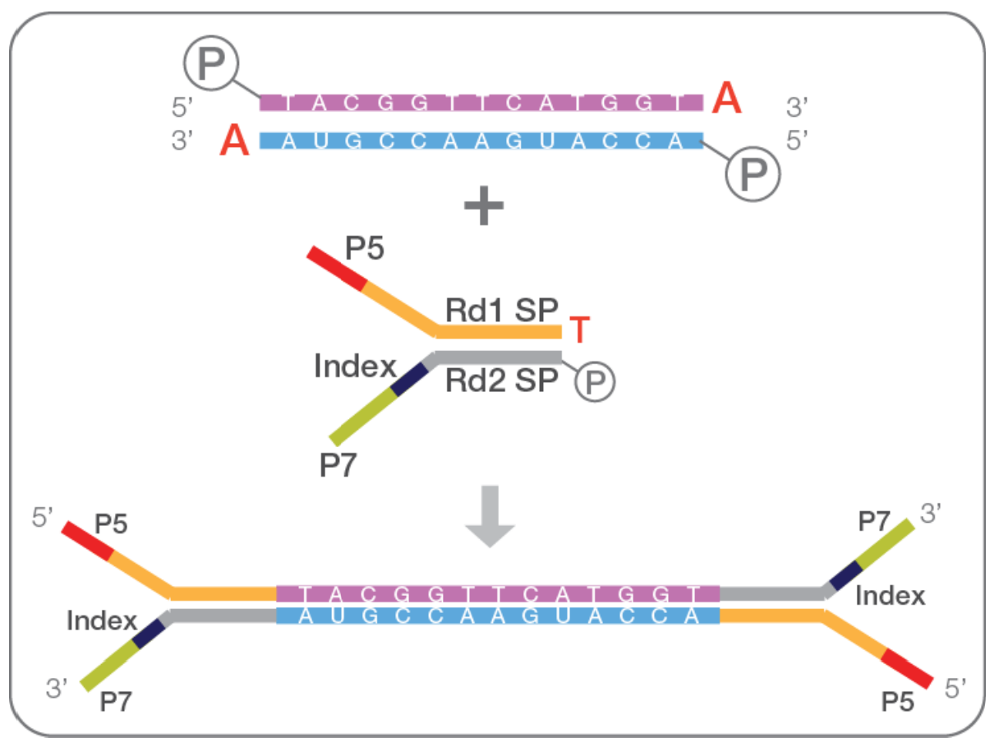
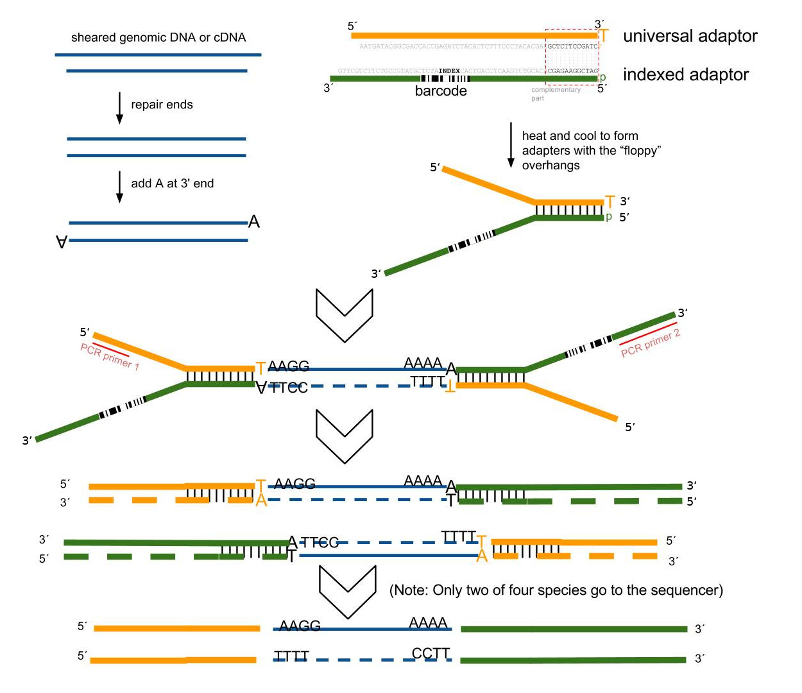
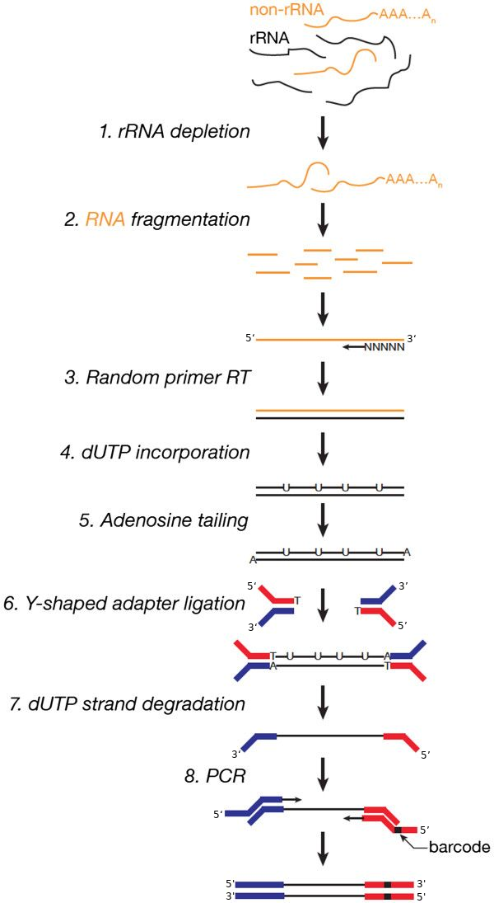
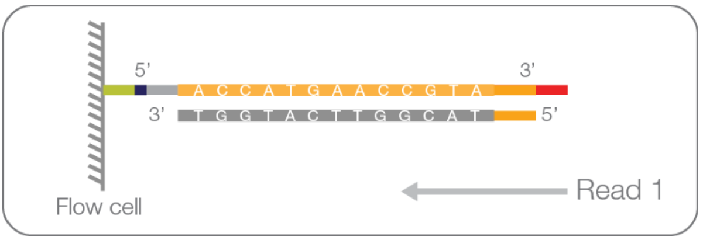
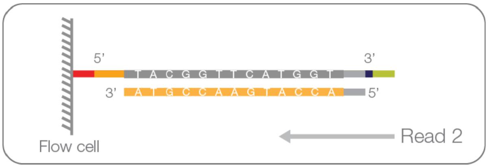
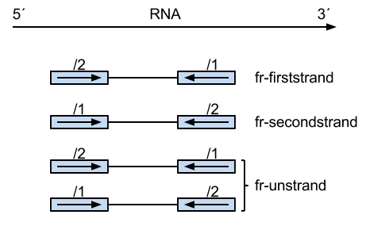
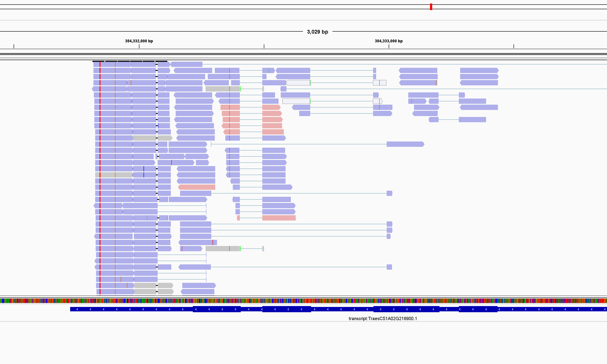
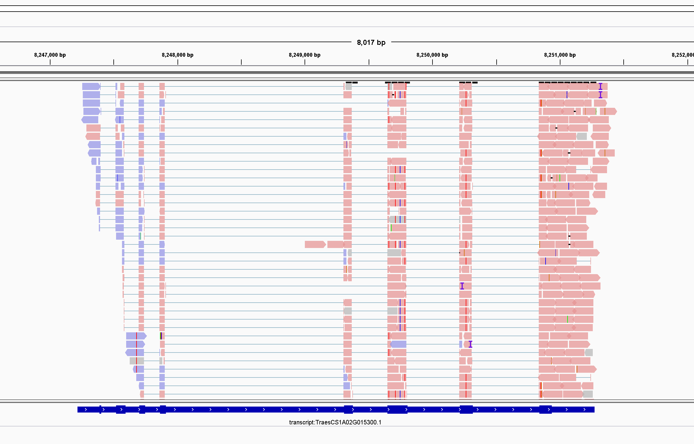

已经有一些工具可以根据已有测序数据推断测序文库的链特异性，比如 RseQC 。RseQC 从 FASTQ 文件中抽取少量的 reads 比对到参考基因组上，从而推断测序文库的链特异性。另外，你也可以自己抽取少量的 reads 然后使用不同的参数直接运行 HISAT2 比对，然后使用 HTSeq 计算 counts ，这样就能直接比较了。
1 分子生物学概念
1.1 正链（forword strand）与反链（reverse strand）
这组概念是相对的，它们指互补的两条核算链，至于谁是正链，谁是反链，人为决定。但就一个给定的参考基因组而言，研究者给出的那个链就是所谓的正链（forword），另一条链是反链（reverse）。
1.2 正义链（sense strand）与反义链（antisense strand）
两条互补的 DNA 链，其中一条携带编码蛋白质信息的链称为正义链，另一条与之互补的称为反义链。回顾一下中心法则，我们就可以发现，所谓 “编码蛋白质信息” 即指 RNA 的编码区，也就是说 RNA 编码区的序列与 DNA 正义链编码区的序列是一致的。因此，正义链的信息与 RNA 链的信息是等价的。在 RNA 转录过程中，DNA 反义链作为模板指导 RNA 合成。
在本文中，我们做一个约定：我们知道用于 RNA-Seq 的 mRNA 都是单链，而且包含蛋白质编码信息。那么以 mRNA 模板反转录出的第一链 cDNA 就可以称之为反义链，因此本文会把第一链 cDNA 和反义链混着用，你们需要记住两者是指同一个意思。相对的，第二链 cDNA 可以称之为正义链，因为它的序列与 mRNA 相同，包含着蛋白质编码信息。
1.3 正链基因与反链基因
这两个概念仅用于本片文章。正链基因是指 RNA 转录方向与正链方向相同的基因，即基因的正义链与基因组的正链相同。反链基因是指 RNA 转录方向与反链相同的基因，即基因的正义链与基因组反链相同。
2 Illumina 建库与测序原理
2.1 测序接头的功能
测序接头的本质是一段短的碱基序列，基本包括三个部分：
与 flow-cell 上面寡核苷酸相同或互补的片段 P5 和 P7 ；
测序时测序引物结合部分 Rd1 SP 和 Rd2 SP ；
用于区分不同样本的 Index ；
接头是待测DNA片段与Flow-cell连接的桥梁，目的片段连接接头后可以在flow cell上扩增再测序。

2.2 TA 克隆法添加测序接头
TA克隆加接头建库的方法是目前应用最广泛的建库技术，简单描述就是：将提取好的DNA片段化或者反转录的 cDNA，进行末端修复和加A尾，然后连接上接头（adapter），最后通过PCR扩增（可选），中间再穿插着纯化/分选步骤就完成了文库的构建。在这里，提前合成好的带T尾接头和末端带A的目的片段在DNA连接酶的作用下通过TA克隆方式连接（图1）。

从原理图我们可以发现，RNA 反转录后的 cDNA ，正义链和反义链都被加上接头进入测序仪了。但问题在于，为什么 “Only two of four species go to the sequencer” ？
Illumina TrueSeq 文库制备流程如下：
- 捕获带有 polyA 的 mRNA 并片段化。
- 合成第一链 cDNA，即合成反义链。
- 合成第二链 cDNA，即合成正义链。如果需要连特异性建库，那么会在这一步用 dUTP 代替 dTTP 。
- 在双链 cDNA 的 3’ 端添加一个碱基 A 。
- 在 cDNA 两端加上接头。接头的种类有单端 index、双端 index 以及无 index 的通用接头。
- 富集 DNA 片段。在此步，如果使用了 dUTP，那么含有 U 的链（第二链 cDNA）的聚合酶链式反应就会终止。
- 最终的文库，P5 接头在 5’ 端，P7 接头在 3’ 端。一条双链 cDNA 的方向由其正义链或者反义链的方向决定。对 dUTP 建库来说，P5 在反义链的 5’ 端。
2.3 dUTP 链特异性建库
在非连特异性建库的 “富集 DNA 片段” 这一步中，如果没有使用 dUTP 终止第二链 cDNA 的聚合酶链式反应，那么扩增富集后带有测序接头的双链 cDNA 有两种类型：来源于第一链 cDNA 的 ds cDNA，以及来源于第二链 cDNA 的 ds cDNA 。这两种类型的 ds cDNA 混在一起，导致我们无法区分测序结果
与常规的 TA 克隆加接头建库的方法相比，dUTP 链特异性建库会导致反转录的 cDNA 其中正义链降解掉了。也就是说，最后的 insert DNA fragment 都来自第一条合成的 cDNA （first-strand cDNA），即反义链。因此，这种类型叫做 fr-firststrand 。

我们从图二开始理解这个过程。红色的接头是 P5 ，read 1 从这里开始测序；蓝色的接头是 P7，read 2 从这里开始测序。从第 7 步 “dUTP strand degradation” 我们可以了解到，只有 RNA 反转录的第一链 cDNA （即反义链） 保留下来了。在加上 barcode 之后，上级测序。因为红色的 P5 接头上有 Rd1 sp ，因此我们可以知道 read 1 序列与 first-strand cDNA 序列已知，也就是说 read 1 是反义链。
2.4 Paired reads 的方向性
为什么说 Paired reads 具有方向性
Read 1 序列能够比对到反义链。

Read 2 序列能够比对到正义链。

测序文库的分类
根据链特异性建库方式的不同，测序文库可以分为下图中的三类。

图中，“fr” 的含义是 fragment ，即 insert DNA fragment 。“firststrand” 和 “secondstrand” 很好理解，这个 DNA 片段来着第一链 cDNA 还是第二链 cDNA 。“/1” 和 “/2” 的分别代表着 read 1 和 read 2 ，
那么，测序文库类型就可以分成：
“fr-firststrand”：insert DNA fragment 来自第一链 cDNA ；比如 dUTP 链特异性建库。
这种建库类型，read 1 能够比对到反义链，read 2 能够比对到正义链。在 IGV 中，比对到正链基因的 read pair 方向性应该是 R1F2 或者 R2F1 ，比对到反链基因的 read pair 方向性 F1R2 或者 R2F1 。
“fr-secondstrand”：insert DNA fragment 来自第二链 cDNA；比如标准的 SOLiD 建库法。
这种建库类型，read 1 能够比对到反义链，read 2 能够比对到正义链。
“fr-unstranded”：无法区分 insert DNA fragment，即非链特异性建库；比如标准的 Illumina 建库法。
3 用 IGV 判断测序文库的链特异性
3.1 以正链和负链的方向来决定 reads 颜色
IGV 中 bam 文件所在的 track 可以给每条 reads 指定不同颜色，因此我们可以利用 “Color aligments by read strand” 设置将 reads 分成粉红和淡蓝两种颜色。
- 所有与正链方向相同的 reads 被标记为粉红色。
- 所有与负链方向相同的 reads 被标记为淡蓝色。
- 灰色的 reads 未配对的或者另一条 read 未比对上的 reads 。
3.2 以 Pair orientation 来决定 reads 颜色
给定一个 read pair ，如果 read 1 与正链方向相同（即 read 1 = forward read），我们将它标记为 F1，这个记号可以理解为 “Forward read is first read”。确定 read 1 的记号为 F1 后，这个给定 read pair 中的 read 2 方向必然与反链方向相同（即 read 2 = reverse read），我们将它标记为 R2，可以理解为 “Reverse read is second read”。这样，我们就知道这个给定 read pair 的 pair orientation 就是 “F1R2” 或者 “R2F1” 。两种表示方法的含义相同，区别在于你查看的对象是 read 1 还是 read 2。
给定一个 read pair，如果 read 1 与负链方向相同，我们将它标记为 R1 。确定 read 1 记号后，read 2 的记号就可以确定为 F2。那么这个给定 read pair 的 pair orientation 就是 “R1F2” 或者 “F2R1” 。
实际上 Pair orientatin 就代表着这个 read pair 是从哪条链合成出来的。
3.3 dUTP 链特异性建库的特征
正链基因：Read 1 与 mRNA 正义链相同，Read 2 与反义链相同。所以，正链基因是 F1R2 或者 R2F1
反链基因：F2R1 或者 R1F2
4 一个复杂的示例：aRNA-Seq
aRNA 是 anti-RNA ，是 mRNA 的反义链。
如果我们使用体外转录的手段扩增微量 mRNA ，那么我们最终拿到的产物的 aRNA，即反义 RNA (anti-RNA) 。那么，我们使用 dUTP 链特异性建库时，第一链 cDNA 实际上是正义链，这正好与普通 mRNA dUTP 建库相反。也就是说，aRNA-Seq 使用 dUTP 的方法获得的测序文库，真正的链特异性是 “fr-secondstrand” 。


通过上面两图我们可以发现，比对到正链基因的 read pair 的方向性是 F1R2，比对到负链基因的 read pair 的方向性是 F2R1 。这个特征与 “fr-secondstrand” 文库类型匹配。
参考资料
- Directional RNA-seq data -which parameters to choose? https://chipster.csc.fi/manual/library-type-summary.html